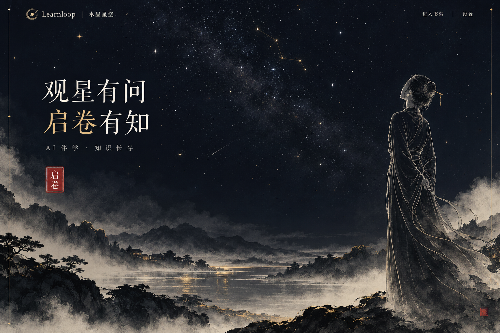

观星启卷
以黛蓝夜色承托素衣女性的白描轮廓；朱砂印章是唯一主要行动入口。进入应用后可跳过此屏，直接恢复学习。
四张图均由已部署的随想 Images API 实际生成，模型 gpt-image-2.5-flare，1536 × 1024，medium。图中的课程、时间、学习记录与文字是视觉示例，不代表用户真实数据；图像也不是已经绑定骨骼的角色、可运行的 3D 模型或完成的应用截图。
入场观星
落笔研习
首页安静、疏朗；书桌温润、有触感；工作区平整、清晰。六类功能具有一对一器物映射，同时保留文字导航。进入学习后，不必每次回到 3D 场景切换功能。
本轮确定整体构图与器物关系。正式素材需再压缩星点密度与装饰性细节，让白描更洗练；书桌采用风格化材质，不以概念图的电影级反射作为运行时效果承诺。
01 视觉系统与阅读秩序
色彩与材质
黛蓝用于场景和导航；宣纸白用于阅读和作答；焦墨用于正文；暗金仅用于星点、选中边缘和少量标记；朱砂用于启卷和印记。金色不承担白底小字号正文，错误提示使用更深的朱砂衍生色，并配文字说明。
纸纹只出现在背景、页边和卡片封面，正文下方保持均匀底色。玉石以粗糙度与柔和高光表现温润；铜镜用烘焙环境反射，不做实时镜面场景重绘。
文字与尺寸
标题使用本地宋体字体栈，正文使用苹方 / 思源黑体等无衬线，代码使用系统等宽字体；不依赖远程字体请求。桌面正文 16–18 px、行高 1.7–1.85，说明不低于 13 px。
间距采用 4 / 8 px 基础单位，面板圆角 8 px，点击区至少 44 × 44 px。普通文本对比度目标 ≥ 4.5:1；当前状态同时用文字、图标或边框表示。
02 技术选择与场景结构
| 方案 | 适用之处 | 本项目取舍 |
|---|---|---|
| Three.js | 直接管理场景、拾取、材质、相机与资源释放；可与现有 React 页面衔接。 | 首选。沿用项目锁定的 0.186.1，使用 WebGLRenderer，独立动态加载。新增视觉层，不改学习数据和评分服务。 |
| Spline | 可视化搭场景、验证构图与交互。 | 可用于设计原型。官方完整离线自托管导出当前列为 Enterprise 功能，且不同导出类型的事件能力不同；不作为本地优先应用的默认运行依赖。 |
| Babylon.js | 完整场景图、摄像机、动画、拾取和更丰富的引擎能力。 | 适合未来复杂空间或游戏化训练。当前只有一张桌面，替换已有 Three.js 会增加迁移工作，没有必要同时引入两套引擎。 |
依据：Three.js 渲染器、Spline 自托管导出、Spline 代码导出、Babylon.js 官方能力表。
场景分层
React 应用与真实学习状态
├─ InkHero：SVG 人物、星空背景、启卷按钮
├─ ScholarDesk：延迟加载的 Three.js 场景
│ ├─ 桌体、纸面、灯光与烘焙阴影
│ ├─ 六组器物 Group + 简化拾取代理
│ └─ 相机控制器、有限拖动、可取消运镜
├─ DeskLabels：HTML 名称、数量、Tooltip、键盘入口
├─ StudySurface：学习 / 资料 / 图谱 / 档案 / 复习
└─ Companion：SVG 分层角色 + 真实业务事件驱动器物优先使用 Blender 制作的轻量 GLB，桌体、书页、简单玉器可先用程序几何。模型固定命名与原点，保留抽屉、毛笔、印章可动部件；复杂铜器花纹烘焙进法线与粗糙度，不逐个雕成高面数几何。纹理、本地解码器和模型均随项目分发。
俯视 35–45°、方位约 45°，以低畸变透视相机形成近等轴测观感；这样推近纸面时无需切换投影类型。若采用严格正交相机，近景通过 zoom 与视点插值完成，不把正交与透视参数生硬混插。拖动范围限制在初始方位 ±12°、俯仰 ±6°。
03 六组器物与业务页面
| 页面 | 器物与 Hover | 点击后的连贯动效 | 最终业务界面 |
|---|---|---|---|
| 学习书桌 | 白玉镇纸 + 博山香炉；玉石边缘微亮，香炉底部出现总览标签。 | 镜头 420 ms 回到总览。青烟只在用户开启专注且窗口可见时低频变化；随时可关。 | 当前目标、继续学习、到期复习。专注时长来自计时记录，不能据此推断掌握。 |
| 学习工作区 | 湖笔 + 青玉笔搁；笔上移少量、出现克制暗金边缘。 | 笔提起约 2–3 mm；镜头 450 ms 对准纸面；平面面板 200 ms 淡入，停渲染桌面。 | 左侧路径，中间精讲 / 作答 / 代码，右侧原文与历史证据；保留 goal_id、session_id 和草稿。 |
| 资料库 | 锦缎书匣；书脊轮廓亮起，显示资料数量或“导入第一份资料”。 | 匣盖 280 ms 打开，最多三张封面扇出；资料抽屉从器物投影位置展开 240 ms。 | 搜索、上传、导入进度、章节预览。长列表分页；文件内容不贴在 3D 纹理上。 |
| 知识图谱 | 青铜浑天仪 + 星宿图；一条选中弧线亮起，不持续自转。 | 单条流星 300 ms 指向纸面，星盘扩展为全屏图谱。点星后一次落墨 180 ms，再开知识卡。 | 节点筛选、前置关系与来源；星点大小不代表“已掌握”，状态由真实证据决定。 |
| 学习档案 | 白玉印 + 印泥盒；印章轮廓高亮，标签为“学习档案”。 | 轻落印 180 ms，纸卷横向展开 260 ms，随后显示平面时间线。 | 声明、偏好、练习证据、评价纠正和成长记录；盖印只是打开动效，不自动授予勋章。 |
| 错题与复习 | 朱砂端砚 + 铜镜；镜缘微亮，显示到期数量，不用红色闪烁催促。 | 镜面掠过一次柔光 160 ms，错题双页从下方升起 240 ms。 | 原答案 / 反馈 / 修正答案 / 补练结果并排核对；重练后才改变纠正状态。 |
器物只是入口，同一业务页有固定 URL 和普通按钮。资料预览、知识卡使用非模态右侧抽屉；编辑或删除等需要专注确认的操作才使用模态框。工作区和图谱占据主要平面，不用多层弹窗包住编辑器。
04 Hover、标签与相机运镜
拾取与高亮
- 使用 pointermove 保存归一化坐标；每个动画帧最多做一次 Raycaster 拾取，仅检测六组简化代理网格。
- 命中子网格后向上查找稳定的 object_id，避免经过一个器物多个零件时反复闪烁。
- 120–160 ms 改变该器物独立材质的 emissive 与轻微位移；恢复原值。共享材质需克隆，避免整桌一起变色。
- 柔光用小型透明面片或局部描边。默认不开全屏 Bloom；不能依赖发光作为唯一选中提示。
Three.js 的 Raycaster 提供相机射线和按距离排序的命中结果。
水墨 Tooltip 与运镜
Tooltip 使用真实 HTML，通过器物锚点的世界坐标 project(camera) 映射到画布坐标。进行边界夹取和遮挡检查；标签不跟着纸纹旋转，不包含难读的篆书功能名称。
悬停约 150 ms 出现、离开 100 ms 收起；Tab 聚焦等价按钮时同样显示，使用 aria-describedby。移动端标签常驻，触控直接打开，拖动超过阈值不触发点击。
运镜使用单个 requestAnimationFrame 控制器，从当前 camera.position、target 插值到预设视点；朝向用 quaternion.slerp 或逐帧 lookAt。350–500 ms easeInOutCubic；新操作取消旧运镜，不叠加多个循环。结束时精确落在目标视点。
实现约定与可取消转场状态机
hero → opening → desk → focusing(objectId) → panel(route)
↑ ↓
└──── returning ────┘
每次转场生成 transitionId；旧 ID 的完成回调不得提交路由。
Escape / 浏览器返回 / 新入口点击：取消当前动画，收敛到明确状态。
载入失败：保留入口与重试；直接显示平面页面，不能锁在墨迹遮罩后。
数据加载与镜头移动同时开始；不要等动画结束才发业务请求。弹窗开启后焦点进入标题或首个控件，背景 inert；关闭后还给触发按钮。非模态证据抽屉不锁住主编辑区。未保存草稿先持久化并检查版本，冲突显示保留两份的选择，不静默覆盖。动画回调绝不提交学习答案或更新掌握度。
05 启卷与页面过渡节奏
首页进入动画总长约 900 ms，阶段部分重叠：印章按压 100 ms → 墨迹从印章中心扩散 250 ms → 宣纸左右展开 300 ms → 桌面镜头归位 400 ms。背景资源未准备好时先显示静态书桌；“直接进入学习”始终可用。再次访问默认恢复最近工作区，不强制重播开场。
墨迹使用局部低分辨率噪声遮罩或预制透明纹理，在一次转场中改变阈值与覆盖范围。画卷以 mask / clip-path 或 scaleX 展开，但文字层最后单独淡入，避免字形被横向拉扁。完成后移除遮罩与临时层。
业务面板采用 8–12 px 位移 + 180–240 ms 透明度过渡。代码、问题和历史答案一次呈现；不用逐字动画制造等待。深度学习状态下不持续摇晃书桌、漂浮卡片或播放流星。
06 动态白描的素材与实现
生成图用于构图与画风参考。要获得精确线条和自然关节运动，需要重新整理矢量路径或分层角色素材；不能把整张 PNG 的轻微缩放当成白描骨骼动画。
首页女性
将头发、发簪、面部轮廓、躯干、双袖、裙摆拆成 8–12 个 SVG 分组。兰叶描的粗细变化以封闭填充轮廓保留，再用中心线 mask 描摹；不要只给所有线条统一 stroke-width。
首次出现时对路径应用 pathLength="1"、stroke-dasharray="1" 与 stroke-dashoffset 从 1 到 0，分组错开约 60–90 ms，整体 1.2–1.8 s，只播一次。头脸和身体主轮廓绘制后保持稳定。
呼吸由胸肩组 0.4–0.8 px 位移、约 4.5–6 s 周期表现；袖摆用固定拓扑路径的两三组关键姿态，或分组旋转 ±0.5–1°。局部线条位移不超过 0.3 px，不对整个人施加噪声抖动。
SVG 与 Canvas 边界
少量精致线条首选 SVG，利于分组、缩放和可访问描述。星点、少量烟线或较多路径可用 Canvas；预缓存 Path2D 和分段长度，不在每帧重新解析路径。
静态星空为本地纹理；最多少量选定星点缓慢变化，不让整片天空闪烁。CSS 或 Web Animations API 控制分组关键帧；可暂停、取消，页面隐藏时全部暂停。
遵循系统 prefers-reduced-motion 与应用开关：立即显示完整人物，停呼吸与衣摆；启卷直接淡入或立即切页。画面文字和行动按钮始终属于 DOM。
/* 用于绘制 mask 的中心路径；最终粗细由原始白描轮廓决定 */
.trace { stroke-dasharray: 1; stroke-dashoffset: 1; }
.trace.is-visible { animation: reveal 1400ms ease-out both; }
@keyframes reveal { to { stroke-dashoffset: 0; } }
@media (prefers-reduced-motion: reduce) {
.trace { animation: none; stroke-dashoffset: 0; }
}路径偏移与动画依据：SVG stroke-dashoffset、Web Animations API。
07 白描伴学角色
建议首版使用 SVG 分层小骨架：肩、肘、腕与颈部以 transform-origin 固定关节，书页和墨条独立分组。桌面宽约 120–160 px，位于面板外侧；移动端默认收起。形象保持素衣、发簪、克制五官与稀疏衣纹，读书与研墨姿态应像同一位人物。
| 状态 | 真实触发 | 动作与边界 |
|---|---|---|
| 安静 / 专注 | 用户进入学习或主动开启专注。 | 展开书本，偶尔翻页。无操作一段时间后停在静态姿态，用户可关闭。 |
| 思考 / 卡壳 | 用户选择“给提示”或声明没理解。 | 研墨或轻抬头；不因停留时间长就擅自推断“不会”。提示仍由明确按钮调用。 |
| 领悟 | 本次评价已保存，并明确显示正确或任务通过。 | 一次提笔轻点头；AI 估计评价照常标注。查看答案、环境错误和模型认证失败不播放成功动作。 |
| 等待 / 异常 | 模型生成中、网络失败或执行环境异常。 | 中性姿态与文字状态，保留输入和重试按钮；不播放无止境“思考”来掩盖错误。 |
后续需要复杂视线、连续衣物变形或口型时再评估 Live2D Cubism Web。它需要分层美术、模型绑定与对应运行时，不是直接把生图结果导入就能完成。官方资料说明 Cubism Core 并未在 GitHub 开源；AI / 聊天界面发布也应按对应许可类型核对，不预设一定免费。
08 业务状态与响应式布局
三栏研习
1440 px：左 240 px、中央弹性至少 560 px、右 320 px。1024 px 左栏缩窄、右证据按需抽屉；768 px 左侧路径抽屉、中央单列；390 px 用“学习 / 路径 / 依据”页签，不压缩三栏到手机中。
右侧始终区分资料原文、历史用户作答、AI 推断与摘要；每项可跳原始来源。停用记忆立即退出引用清单。主题切换不清除当前题目、提示次数、查看答案状态或草稿。
完整状态
空资料显示导入入口；未建目标显示目标表单；生成中显示可取消任务；认证失败展示 HTTP 状态与安全错误码；资料解析失败保留重试；证据不足明确说明。纸卷与印章只表达打开方式，不伪造完成或掌握。
3D 加载失败、WebGL 不可用、context lost 或减少动效时，回退静态图 + 六个文字入口。返回操作还原目标、会话、滚动位置与编辑草稿，焦点回到入口。
09 性能与资源预算
以下是实施预算，需在用户设备上实测，不是当前概念图已达到的指标。
| 项目 | 预算与策略 |
|---|---|
| 首屏 | 首页关键图目标 ≤ 350 KB WebP/AVIF，角色 SVG ≤ 100 KB；不预载大模型场景。概念 PNG 仅供审阅，不直接当生产素材。 |
| 3D 增量 | 桌面场景、压缩纹理、解码器与引擎增量传输合计目标 ≤ 2 MB；模型 ≤ 60k 三角形，draw calls 目标 ≤ 70，像素比上限 1.5。 |
| 光照 | 环境光 + 一个主光源；最多一个低分辨率阴影图。阴影只在物体变化时更新。玉石先用普通 PBR，避免多重折射与实时反射。 |
| 动态运行 | 桌面交互目标 60 fps，中低端目标 30 fps；烟线 / 伴学可选、低频。运镜结束且无活动动效时停止连续渲染；离屏或页面隐藏立即暂停。 |
| 释放 | 离开场景取消 RAF、动画和监听器，断开观察器；释放独占 geometry、material、texture、render target 与 renderer。共享缓存做引用计数，避免误释放仍使用的纹理。 |
| 图谱 | 数据量大时先展示当前目标子图、聚类和过滤。星宿布局计算进 Worker，不默认一次绘制全部历史知识。相同节点只保留一个可访问的详情入口。 |
资源释放能力参考 WebGLRenderer.dispose 与渲染统计；具体预算由本项目设定。
10 实施顺序与验收
- 选定视觉稿。确认首页留白、桌面材质与人物线条；产出人物分层 SVG、六组器物资产和桌面静态回退图。
- 先做平面主题。沿用现有业务组件，把工作区、资料、档案、复习、图谱和设置覆盖到新语义色；先验真实空白、错误与正常状态。
- 接入书桌。实现六个稳定 object_id、拾取、HTML 标签、键盘入口、有限镜头拖动；按钮和器物到达同一业务页。
- 增加动效。按启卷 → 运镜 → 面板的顺序实现，验证取消与回退，再加入白描呼吸和伴学。所有动效独立于评分与持久化。
- 完成联合验收。真实模型连接后完成资料拆解、精讲错误作答、沙箱运行、错题补练、掌握度与复习更新、重启恢复及导出。
390 / 768 / 1440 px 无主内容横向溢出；六个入口均可纯键盘操作；减少动态效果下可完成全部学习；转场中快速切换或后退不丢草稿；反复进入 / 退出书桌 20 次后 WebGL 资源不持续增加；主题与动画不产生新的学习证据。
本轮交付是四张实际生图、此交互与技术规范，以及模型诊断修复。新中式 3D 场景、最终矢量角色与骨骼资产尚未实施；选定视觉方向后可按上述阶段落地。